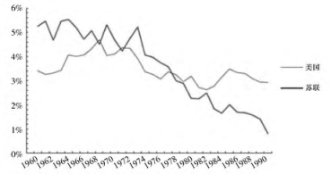

收录于合集

简
张文木
北京航空航天大学战略问题研究中心教授，主要研究方向: 中国国家安全战略。
原文《地缘政治的本质及其中国运用》，本文有删节和改动。
★
近代和现代是中国地缘政治研究推进最快、气象也最为宏大的时期，同样，这也是中国陷入殖民地半殖民地深重灾难及中国人民图强救亡精神最为高涨的时期。久病成良医，良医治久病。中国地缘政治研究的这种大幅推进是时代的需要。但理论的大幅推进总难免会有粗放的方面，其对国家发展影响最大的，还是对地缘政治本质的把握。
★
一、地缘政治不能研究成让国家“四处拼命”的学问
地缘政治( geopolitics) ，是一个外来词汇，但这决不意味着中国历史上没有地缘政治思想，中国古代多用“形胜”“方舆”等，现代中国则多用“历史地理”或“地理政治”等来表述“地缘政治”的内容。比如中国清代顾祖禹的《读史方舆纪要》、魏源的《海国图志》，都是近代以来中国地缘政治的奠基之作。前者重点研究中国内部的山川形势，后者研究世界地理布局，贯穿其中的还有相当丰富的利用地形争衡天下的历史经验和教训。历史进入 20 世纪以后，地缘政治研究在世界范围得到极大地推进。在中国曾问吾、史念海、谭其骧等在其中都有大贡献; 西方同期的麦金德( Halford John Mackinder) 、马汉 ( Alfred Thayer Mahan) 、凯南 ( George F． Ken-nan) 、布热津斯基( Zbigniew Brzezinski) 等的研究也对学界产生巨大的冲击。前者是为了中国反殖民地、反帝国主义的时代主题，后者是为了英美国家拓展“生存空间”、推行帝国主义和霸权主义的国家私利的需要。19 世纪德国地缘政治学的倡导者们就认为，“ 地缘政治是一种科学方法，是一种以编排地理资料去开发地理空间的思想。”
资源的绝对有限性与发展的绝对无限性的矛盾，以及由此引起国家力量的绝对有限性和国家发展需求的绝对无限性的矛盾，是人类及其赖以生存的国家发展自始至终面临的基本矛盾，而贯穿其间的生存斗争则是人类文明进步的绝对底线和动力。由此而言， 地缘政治的本质并不是地理与地理的关系，而是地理与政治的关系。
那么，什么是政治呢? 政治问题就是吃饭问题，对于国家而言，就是资源问题。由此而论，“ 地缘政治与资源政治的统一，是现代地缘政治学说的本质特征” 。而资源则是地缘政治的核心。极而言之，没有资源就没有地缘政治。司马迁说: “天下熙熙，皆为利来; 天下攘攘，皆为利往。”⑦世界资源密集区便是世界地缘政治的天然中心。与大西洋不同，太平洋是世界新兴市场国家最密集因而也是市场潜力最大的区域，印度洋是世界包括石油天然气在内的工业资源最丰富的区域，这使得近代以来几乎所有的强国都将目光锁定在太平洋和印度洋地区，并为控制这一区域进行决战。
随着研究的进一步深入，笔者发现学者与政治家对地缘政治的认识有着重大的差别: 学者注重并能较好的把握地理中的点与面的关系，以麦金德为先驱的西方的地缘政治学者还破天荒地为人们提供了从整体上认识世界地缘政治的全球框架，他们理论缺点是其优点的过度运用。他们在纸稿上尽情挥洒他们天才想象的同时，又得鱼忘筌，聚焦了地缘却忽略了政治，结果写出的只是一部部优秀的“地理手册”而不是“地缘政治”。他们笔下的“形胜”没有一个是不重要的，他们书中那一个接一个的“枢纽地带”宛如一串动人的“塞壬的歌声”，诱使着他们的国家为争地而四处“拼命”，由此拉长战线、透支国家资源并导致国家的衰落。
卡尔·豪斯浩弗( Karl Haushofer) 说: “在地理上无知的代价将是巨大的。”可惜的是，豪斯浩弗本人的理论就过于深入地理而由此失去了政治。英国地缘政治理论学者杰弗里·帕克 ( Geoffrey Parker) 评价说，正是“德国的地缘政治学思想促成了 1945 年 5 月第三帝国的众神之日”。如将这个评价用于西方许多地缘政治学者及其理论也是合适的。1908 年，英国寇松 ( George Nathaniel Curzon) 勋爵在他的《边疆线》一书中就疯狂主张: “沿着上千英里的遥远疆界，都将出现我们 20 世纪 的 边 防 骑 士 ( Marcher Lords) 。”结果，与 20 世纪下半叶美国的凯南、布热津斯基的学说一样，寇松的地缘政治学说成了让英国为扩张利益无节制地四处“拼命”的学问。基辛格( Henry Alfred Kissinger) 说:“凯南的成就是，到了 1957 年，自由世界所有的矮墙都已配置卫兵防守，他的观点对此有决定性的贡献。事实上，由于岗哨林立，美国可以大大自我批判。”
地缘政治不应当被研究成让国家四处“拼命”的学问。毛泽东同志说: “‘灭此朝食’的气概是好的，‘灭此朝食 ’的具体计划是不好的。”这就是说， 拼命只是战役层面上的事，绝不能将它上升到战略，尤其是国家战略层面。
1937 年，毛泽东在《论持久战》中就提出“赌国家命运的战略决战应根本避免”; “拼国家命运的决战则根本不干”的原则。由于中国坚持了这一原则，积小胜为大胜，以时间换空间，中国最终赢得了抗日战争的全面胜利。英国的麦金德，德国纳粹时期豪斯浩弗，美国的凯南、布热津斯基等为自己的国家提供了一整套导致国家为争地盘而四处“拼命”的研究，结果他们的国家却倒在这些学者的眼前。
政治家是实践地缘政治学的主体，能够吸取和运用学者研究成果，充分认识不同地理空间的不同特点，较好地把握战略目标与战略资源 /能力的匹配及其矛盾转化关系的政治家，一般都取得了巨大的成就，因为他们的认识会使国家培养元气，行稳致远，而这样的学识恰恰是麦金德、凯南、布热津斯基等地缘政治学者力所不及的。
二、 地缘政治本质是研究国家目标与国家资源在特定地理空间相匹配及其矛盾转化的学问
地缘政治本质上应被理解为国家“养生”和争取有方向的世界和平的学问; 其要义是正确地认识国家目标与资源在特定地理空间相互匹配关系及其矛盾转化的学问。 在这方面做得比较好的人物集中于优秀政治家群体，其中大多数人的伟大并不在于他们对本国战略目标的认识和把握能力，而在于对本国战略目标与战略资源在特定地理空间的匹配关系及其矛盾转化节点的认识和把握能力。
1927 年 8 月 7 日，中共中央决定在湘鄂赣边区组织秋收起义。8 月 23 日，中共中央复信湖南省委说: “中央认为: 湖南暴动，可以湘南为一发动点，长沙为一发动点，在宝庆( 今湖南邵阳) 一带如有可能亦可做一暴动点; ‘湘中发动，集中军力，扑城取长沙’; 湖南，湘中的暴动尽可能地同时发动，免陷一地于孤立。”8 月 30日，中共湖南省委就暴动范围问题致信中央说: “我们是向长沙暴动为起点，并不是放弃湖南; 没有把衡阳做第二个发动点，是因为我们的力量只能做到湘中起来; 各县暴动，力量分散了，恐连湘中暴动的计划也不能实现。”1928 年年底，毛泽东在《井冈山的斗争》一文中指出: “我们的经验，分兵几乎没有一次不失败，集中兵力以击小于我或等于或稍大于我之敌，则往往胜利。中央指示我们发展的游击区域，纵横数千里，失之太广，这大概是对我们力量估计过大的缘故。”
抗日战争时期，这个力量有限性的思想成了毛泽东判断中国抗日战争和苏联反德国法西斯战争结局的重要依据，1937 年 7 月，毛泽东在接受斯诺( Edgar Snow) 采访时说: “在占领中国的长期负担的重压下，日本的经济是要崩溃的;在无数次胜负不决的战役的考验下，日本军队的士气是要涣散的。当日本帝国主义的浪潮在中国抗战的暗礁上冲散了以后，中国革命人民中潜藏的大量人力，却还可以输送无数为自己的自由而战斗的战士到前线来。”这个思想在1938 年毛泽东写作《论持久战》时得以系统发挥。毛泽东说：
日本的军力、经济力和政治组织力虽强，但这些力量之量的方面不足。日本国度比较地小，其人力、军力、财力、物力均感缺乏，经不起长期的战争。日本统治者想从战争中解决这个困难问题，但同样，将达到其所期求的反面，这就是说，它为解决这个困难问题而发动战争，结果将因战争而增加困难，战争将连它原有的东西也消耗掉。
1942 年，毛泽东运用力量有限性的思想准确地提出德国法西斯将在入侵苏联的战争中灭亡的判断，他在《第二次世界大战的转折点》一文中写道:
希特勒进攻苏联的战略企图没有一个不是失败的。在此期间，希特勒鉴于去夏分兵的失败，集中他的兵力向着南线。然而他尚欲东断伏尔加，南取高加索，一举达成两个目的，仍然分散了他的兵力。他尚未计算到他的实力和他的企图之间的不相称，以致“扁担没扎，两头打塌”，陷入目前的绝路。在相反方面，苏联则是越战越强。斯大林的英明战略指挥，完全站在主动的地位，处处把希特勒引向灭亡。今年冬季开始的第四个阶段，将是希特勒走向死亡的阶段。
到 20 世纪 70 年代，毛泽东将这一思想进一步发展为指导国家外交“深挖洞，广积粮，不称霸”的基本方针。毛泽东将他在长期的军事斗争实践中形成的这些认识用于历史研究，其观点更显卓尔不群。1953 年 10 月 17 日，毛泽东在与即将赴越南的韦国清谈话时说:
三国时代，刘备终不能取天下，首先是因为误于诸葛亮初出茅庐时的《隆中对》，其为刘备设计的战略本身就有错误。千里之遥而二分兵力，其终则关羽、刘备、诸葛三分兵力，安得不败?
从某种意义上说，诸葛亮属于学者型政治家，与当代美国的凯南、布热津斯基等有着同类气质。正是由于诸葛亮立都于成都，才造成已被两分的兵力因战线太长而更难收拢，以致难以迅速弥补关羽失去荆州后蜀国国防出现的战略缺环; 也正是因为立都于成都，才迫使刘备率兵东进并陷入一百多年前公孙述政权“空国千里之外，决成败于一举”的危境。
据《资治通鉴》，曹操取得汉中后，刘晔曾向曹操建议: “蜀民既定，据险守要，则不可犯矣。今不取，必为后忧。”毛泽东在读到这一段时，一定想到在长征路上他与张国焘斗争的经验，在页旁批注: “不可信。”
显然，毛泽东的见解更具实践价值。这里，刘晔考虑的是有限资源投入与局部目标实现的关系，他的建议当然不会为曹操采纳。曹操考虑的是有限资源投入与全局目标实现的关系。且不说曹操的战略目标是逐鹿中原，也不说入川后因地形复杂将使清剿刘蜀政权的部队需要极大且因路途险远、运输而不能保证的资源，我们只要看看 13 世纪中叶蒙古大军入川后大汗蒙哥战死在钓鱼城( 今重庆) 下以致终不能出川的窘境，就会知道，进入四川若不能控制重庆，那就会被———用毛泽东的话说———“瓮中捉鳖”，遑论再入中原。入主中原，得到的是中国，而占据四川得到的只是偏地大王。如果采纳了刘晔的建议，届时曹操所失的将是天下，而获渔翁之利的则是孙权。
地缘政治理论的守衡本质并不出自学者书房中的逻辑推理，它是地缘政治实践中所蕴含着的守衡规律的真实反映。既然是规律，那它就具有普遍的认识论意义。
历史上有一个重大且同类的现象值得研究。这就是为什么曾打到印度河上游的两个战无不胜的帝王———亚历山大 ( Alexander the Great) ④和成吉思汗———面对唾手可得的印度半岛，却班师回朝而不是顺河而下，直捣黄龙?
据史书载，公元前 325 年，亚里士多德( Ar-istotle) 的学生、马其顿亚历山大大帝从希腊越过爱琴海率军东进，沿古丝绸之路的南线侵入伊朗高原，继而挥师越过印度河。此后他不是继续南下占领印度，而是“自我封闭三日”，书上说，他随后认识到“他不是世界之主”，决定班师回朝，转而采取东西方民族融合政策。这是因为亚历山大知道得鱼不可忘筌，因地形陡峭，进印度不难，难在出来。而消耗大资源进了印度，若出不来那就只能当“南亚之王”，届时他丢掉的则是他已征服的从希腊到伊朗高原的东方世界。但亚历山大认识到这样的真理毕竟太晚了，其战线已拉得过长。公元前 323 年亚历山大病逝后，他的帝国随即分裂为马其顿王朝、托勒密王朝和塞琉古王朝。
13 世纪初，成吉思汗在后来的英国人、美国人和苏联人都望而生畏的帕米尔高原上所向披靡，但当他打到印度河边时也停了下来。1222年 9 月 15 日晚，他约丘处机深谈。史书上说两人谈养生，其实是在讲今后的战略方向。谈后成吉思汗与曹操“得陇不复望蜀”的想法一样，得了帕米尔就不再南望印度了。那晚深谈后，成吉思汗回到一千多年前亚历山大的思路，遂决定打道回府: 回新疆，图中原。
地缘政治的本质和规律在近代西方多次得到充分的展现。
俾斯麦( Otto von Bismarck) 是近代德国少有的参透地缘政治要义的政治家。他用“铁血政策”统一德国并打败法国后，将德意志的强国地位仅限于欧洲地区，拒绝任何全球性的战略企图，在他担任首相职务将近 20 年的时间里，他的目的就是孤立法国，稳定四方，用较长时间巩固、消化德国 1866 年至 1872 年在欧洲取得的地缘政治成果。遗憾的是，这种节制政策在威廉二世 ( Wilhelm Ⅱvon Deutschland) 执政时期 ( 1888— 1918 年) 受到破坏，为此俾斯麦于 1890 年辞职。此后德国大规模扩军，实行全面扩张的政策。到第一次世界大战初，俾斯麦时期的地区性守成的外交成果已荡然无存，德国与奥匈帝国已四面楚歌。1914 年德国利用萨拉热窝事件，挑起第一次世界大战，结果是德国在战争中全面毁灭; 30 年代末希特勒( Adolf Hitler) 步其后尘，结果又是德国被强力肢解。
俾斯麦似乎对这种灾难的出现有某种预见。退休后，“有一次他在大学生面前说，他们将到 1950 还为皇帝和帝国而举杯庆祝。但在私下的讲话里他常很悲观地谈到帝国的未来和未来的危险。有一次他说，有可能，上帝给德国安排好第二次分裂的时间和在此基础上而出现的一次新的光荣时代的可能性”。德国后来的历史证明了俾斯麦预见的准确性: 1949 年，德国正式分裂为德意志联邦共和国( 9 月 20 日成立)与德意志民主共和国( 10 月 7 日成立) 。基辛格博士对俾斯麦有很高的评价，认为: “由于他了不起的建树，使得他所缔造的德国经历了两次世界大战的失败、两度遭外国占领及国家分裂达两个世代之久，却仍巍峨屹立。”
同样的诱惑在不同的政治家中会有不同的选择。1940 年 11 月，希特勒曾对苏联外长莫洛托夫( Vyachesbcv Mikhaylovich Molotov) 说: “你们应该有通向温暖海洋的出海口，将来要像伊朗、印度那样。”莫洛托夫后来对此评价说: “这是个毫无远见的人，对苏联的政策缺乏透彻的了解，却要把我们拉去冒险。如果我们在南方陷了进去，他的处境就会轻松得多，一旦英国要和我们作战，我们就得依靠他。如果不理解这一点，那就太天真幼稚了。”
1947 年 12 月 24 日，希腊共产党已宣布成立希腊临时民主政府，衰落的英帝国已无力控制希腊的局势，于是不得不请求美国的帮助。在此紧急关头，保加利亚共产党领导人于 1948年 2 月 10 日拜见斯大林( Joseph Vissarionovich Stalin) 并请求苏联支持，斯大林认为支援希腊已超出苏联的能力。在回答保加利亚工人党书记、政治局委员、部长会议副主席科斯托夫·特拉乔伊提出“希腊的游击运动的失败将会给其他巴尔干国家造成非常困难的局面”的问题时，斯大林说:
自然，对游击队应该予以支持。但如果游击运动的前景无望的话，最好将斗争推移至最佳时间。即使在力量对比上有什么差距，那也不能喊叫。必须理智地计算力量。如果计算表明，当时工作不可能有进展，那也无须羞于承认这一点。如果局势不利的话，可以收缩游击运动。即使今天不可能，明天也会是可能的。
这时斯大林脑海中想到的一定是法国拿破仑( Napoleon Bonaparte) 在特拉法尔加惨败于英国海军的教训以及德国纳粹即使在最强大的时期也没能控制地中海的事实，他告诉保加利亚同志，苏联没有可与英美匹敌的海军，况且“希腊的地理位置是在西方国家重要的运输线上。美国直接插手这个地区———美国是世界上最强盛的大国。”因此斯大林要求他们“应该把希腊起义的事收起来。”
莫洛托夫和斯大林的思路是一致的。有意思的是斯大林的思路与前述1927年8月23日，毛泽东就中共中央关于在湘鄂赣边区组织秋收起义的决定回复中共中央湖南省委信中的思路也是一致的。这就是准确地把握战略目标与资源之间的匹配节点，不做华而不实即目标超过能力的蠢事。鉴于同样的哲学，1935年10月，红军翻越岷山，长征即将取得胜利，毛泽东作《念奴娇·昆仑》。
横空出世，莽昆仑，阅尽人间春色。飞起玉龙三百万，搅得周天寒彻。夏日消溶，江河横溢，人或为鱼鳖。千秋功罪，谁人曾与评说? 而今我谓昆仑: 不要这高，不要这多雪。安得倚天抽宝剑，把汝裁为三截? 一截遗欧，一截赠美，一截还东国。太平世界，环球同此凉热。
1958 年 12 月 21 日，毛泽东对《念奴娇·昆仑》曾做批注: “昆仑，主题思想是反对帝国主义，不是别的。”毛泽东在词的前半阕预言中国必将崛起并将对旧世界产生巨大冲击，后半阕告诫我们不要走称霸世界的旧路。
地缘政治是刀尖上的哲学，而地缘政治学的要义不在刀子而在哲学。刀子是要有对象的。这就要求明确我们的敌人是谁，另一方面，哲学是讲边界的，这就要求我们要知道自己的力量边界在哪里。1972 年，尼克松 ( Ｒichard Milhous Nixon) 来到中国，说要跟毛泽东谈哲学。他说的“哲学”就是两个国家的国力边界及其合作的边界。毛泽东与尼克松这两个有哲学的政治家一见面，这个世界就向光明的方向转变。麦金德、凯南，尤其是布热津斯基等“地缘战略大师”为自己的国家提供的只有刀子而没有哲学，只有战略目标而没有能力界限的学说，这些学说则诱导他们的国家走向了衰落。1972 年年底，尼克松访华后，毛泽东在一个批示中告诫全党: “深挖洞，广积粮，不称霸。”毛泽东是在警示未来中国不要重犯美国扩张目标与国家资源不匹配导致国家衰落的错误。
在国际博弈中，世界上没有一个大国具有足够的实力可以同时与两个以上的大国对抗 。
19 世纪初，拿破仑法国与英国作战，曾取得过辉煌的战绩，法国继而于1812 年轻率深入俄国，其后三年便败; 20世纪40年代，德国在希特勒统治下与英国作战并控制了西欧，1941 年德国侵略苏联，其后又是三年便败; 同期的日本与中国开战，初期取胜，1941 年年底又与美国开战，其后还是三年失败; 20世纪50 年代在朝鲜战场上，美国同时与中国和苏联对阵，美国三年便败; 60 年代在越南战场上，美国还是同时与中国和苏联作对，最终还是以惨败告终; 勃列日涅夫 ( Leonid I． Brezhner) 时期的苏联与中美同时作对，导致苏联的最终解体; 21 世纪初，小布什 ( George Walker Bush) 政府确定了七个所谓的“邪恶轴心”，其结果导致美国由此衰落。由图 1可以看出，苏美国内生产总值( GDP ) 对比发生决定性变化的时间在 1978 年，为什么? 这一年中美确定建交，苏联的对手由一个变为两个，此前是美国应对中国和苏联，都是 1－2 = －1。事实上，自1972年中美联手后，苏联和美国的国力都在急速下滑，1978年只不过是苏联彻底落后于美国的时间节点而已。

美苏实际 GDP 年均增长率变化对比 ( 按照 10 年移动平均线计算)
资料来源: 根据世界大型企业联合会发布的《TotalEconomy Database 2016》数据计算;参阅［英］约翰·罗思义: 《无论谁上台，中美对抗都不符合双方利益》，http: / / www． guancha． cn / LuoSiYi /2016 _ 11 _ 07 _379648．shtml。1972 年初，中国政府准备接待尼克松访华。
1 月 6 日，毛泽东同周恩来、叶剑英谈外事工作时说: “其实这个公报没把基本问题写上去。基本问题是，无论美国也好，中国也好，都不能两面作战。口头说两面、三面、四面、五面作战都可以，实际上就不能两面作战。”送走尼克松后，7月24日，毛泽东在与周恩来、姬鹏飞、乔冠华等谈国际问题时，再次叮嘱: “在两个超级大国之间可以利用矛盾，就是我们的政策。两霸我们总要争取一霸，不两面作战。”
似乎是历史的讽刺，就在麦金德对英国海洋实践做出如此经典的理论概括且因此誉满全球的时候，他看到的是由他的理论推起的第二次世界大战及战后大英帝国的落幕: 1947年8月15日印度和巴基斯坦分治和印度独立，5个月前即3月6日麦金德去世。“直接以麦金德的思想为基础”的凯南“冷战”理论，将美国推向朝鲜战场和越南战场并由此造成美国的衰退。与麦金德、凯南一样，就在布热津斯基挂满学术桂冠的时候，他也看到了美帝国的黄昏并于2017年5月27日逝世。此时中国与俄罗斯已结成日益紧密的战略伙伴关系且不可战胜; 俄罗斯与法国、德国在乌克兰达成谅解; 克里米亚已转入俄罗斯手中，英国已决定脱离欧盟。如果布热津斯基还健在，相信他会看到与他的描述相反的西方世界“大失败”的结果。
遭遇到“大失败”的为什么总是这些“满腹经纶”的人呢? 这是因为他们的研究偏离甚至违背了地缘政治的本质和其中“环球同此凉热”这样一个连中学生都不陌生的“能量守恒定律”。 地缘政治的本质与生活常识是一致的 。违背常识是要吃亏的，而违背常识的往往是其认识走不出书斋的人。
文章来源： 《太平洋学报》2017年第8期
筛选：晞哲 **** 编辑：鑫辰
声 明
国政学人微信公众平台系非盈利学术平台。建立初衷是方便广大学人进行学术研究，促进学术的传播和交流，不做任何商业用途。如有任何权利问题，请直接与我们联系。